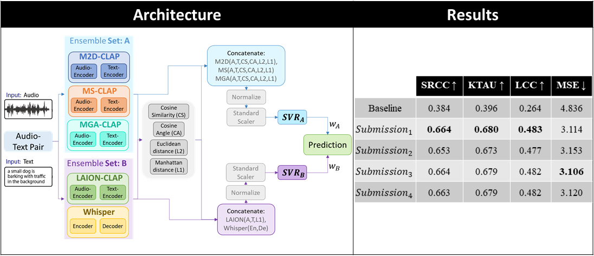
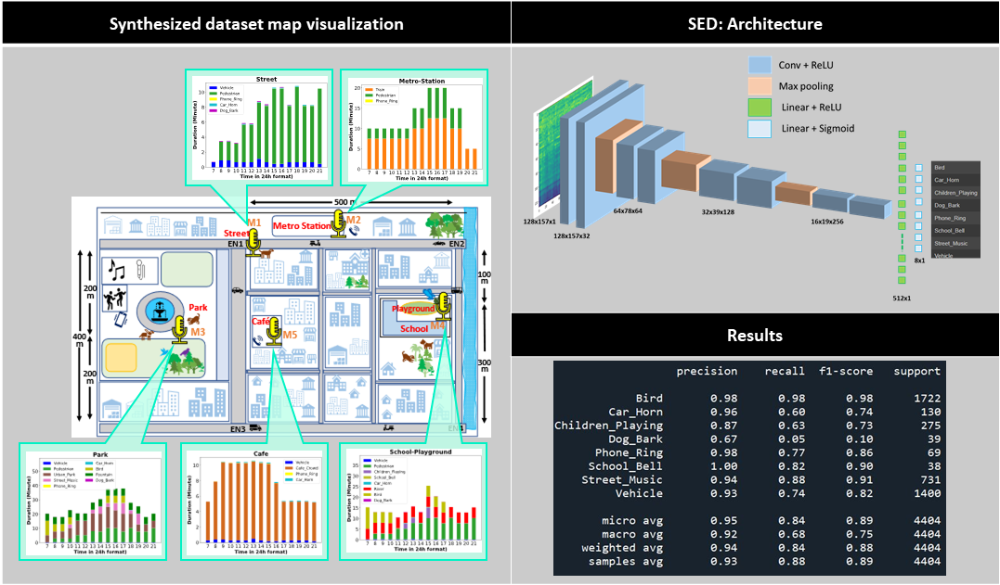
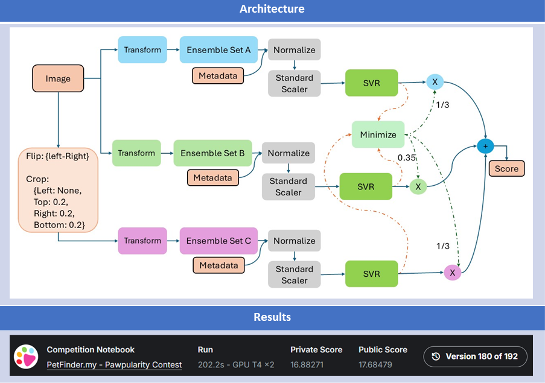

About Me
Hi, I’m Snehit Chunarkar, a PhD researcher exploring the fascinating world of machine learning, speech, and emotion understanding. My work focuses on building intelligent systems that can perceive and interpret human emotions through sound and language in natural, real-world settings.
I’m particularly interested in:
- Speech & audio representation learning
- Multimodal Transformers and cross-modal fusion
- Emotion reasoning and context-aware AI
- Visualization of embeddings & interpretability
Education
PhD in Electrical Engineering (Ongoing)
Master’s in Instrumentation and Signal Processing
Bachelor’s in Instrumentation Engineering
Research & Publications
Automated acoustic understanding, e.g., sound event detection and acoustic scene recognition, is an important research direction enabling numerous modern technologies. Although there is a wealth of corpora, most, if not all, include acoustic samples of scenes/events in isolation without considering their interconnectivity with locations nearby in a neighborhood. Within a connected neighborhood, the temporal continuity and regional limitation (sound-location dependency) at distinct locations creates noniid acoustics samples at each site across spatial-temporal dimensions. To our best knowledge, none of the previous data sources takes on this particular angle. In this work, we present a novel dataset, the Spatio-temporally Linked Neighborhood Urban Sound (STeLiN-US) database. The dataset is semi-synthesized, that is, each sample is generated by leveraging diverse sets of real urban sounds with crawled information of real-world user behaviors over time. This method helps create a realistic large-scale dataset, and we further evaluate it through perceptual listening tests. This neighborhood-based data generation opens up novel opportunities to advance user-centered applications with automated acoustic understanding. For example, to develop real-world technology to model a user’s speech data over a day, one can imagine utilizing this dataset as the user’s speech samples would modulate by diverse sources of acoustics surrounding linked across sites and temporally by natural behavior dynamics at each location over time.
With multiple languages spoken in the world by different groups of people, we may encounter mixed language speech to hear, especially while vlogging in a different country or during interviews with voice dubbing. The appropriate language speech audio can be extracted from a mixed one using a separation mechanism. This paper proposes a DNN model to perform such a language separation task. Different features like Mel Frequency Cepstrum Coefficient (MFCC), Power Spectrum, and Relative Spectral Transformed Perceptual Linear Prediction coefficient (RASTA-PLP) are extracted from the mixed language speech as the input to the DNN. For the training target, the Short-Time Fourier Transform (STFT) Spectral Mask is considered. To understand the improvement on the speech, the processed speech is then evaluated for its intelligibility and quality. Here Short-time Objective Intelligibility (STOI) and Perceptual Evaluation of Speech Quality (PESQ) scores are used to compare the Intelligibility and Quality of the separated language speech signal processed by the DNN. It can be observed from the results that the language separated audio using a trained DNN model has shown improved Intelligibility and Quality.
This paper presents a novel piecewise linear (PWL) approximation method for designing a highly precise nonlinear activation function tailored for hardware implementation of inference models. It is developed as an Adaptive Step-Size-based Recursive Algorithm (ASRA) method, incorporating the maximum allowable error (ϵ) as an input parameter. PWL functions are realized with minimal computational overhead, utilizing only addition operations and coefficient memory, thus avoiding multiplications. With fewer resources, the proposed method allows for the accurate approximation of nonlinear functions. The hardware implementation uses a Synopsys Design Compiler with a TSMC 90-nm library. Performance comparison in terms of area, delay, and power consumption demonstrates the effectiveness of the proposed approach.
Projects
Our proposed model's prediction on Validation data is ranked in the top 3 for ICASSP (2026) SP Grand Challenge: GC12-XACLE (x-to-audio alignment). Results on Test data are awaited. Task: Given Audio-Text pairs, we need to predict the alignment score for each pair.
STeLiN-US: A spatio-temporally linked neighbourhood urban sound database. The dataset is semi-synthesised, that is, each sample is generated by leveraging diverse sets of real urban sounds with crawled information of real-world user behaviours over time.
A picture is worth a thousand words. You might expect pets with attractive photos to be adopted faster. For this contest, I have developed an ML architecture to predict a pet photo’s appeal score.
Skills
Languages
Libraries
Softwares
Cloud Computing
Tools
Contact
Email: snehitc@gmail.com